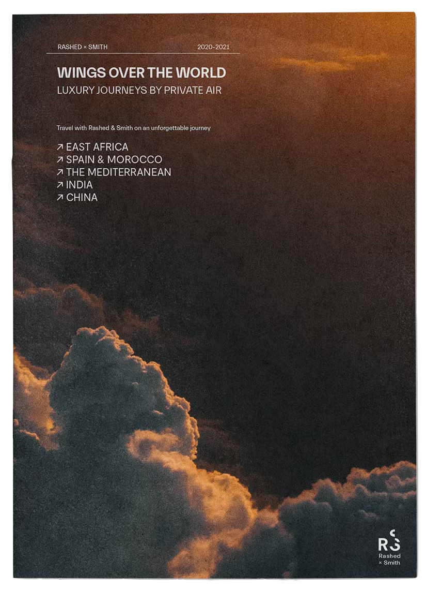

Rashed + Smith
Esta propuesta editorial es un sistema de jerarquías de información clara de itinerarios de viaje y las amenidades que Rashed and Smith ofrece, convive y se complementa de una cuidada selección de imágenes, que no solo habla de los destinos sino de las sensaciones, generando un ambiente para el lector. Esta es una contemporánea propuesta que se caracteriza por su claridad y sencillez.
Publicado en 2020
Impresión digital
18 x 25 cm
